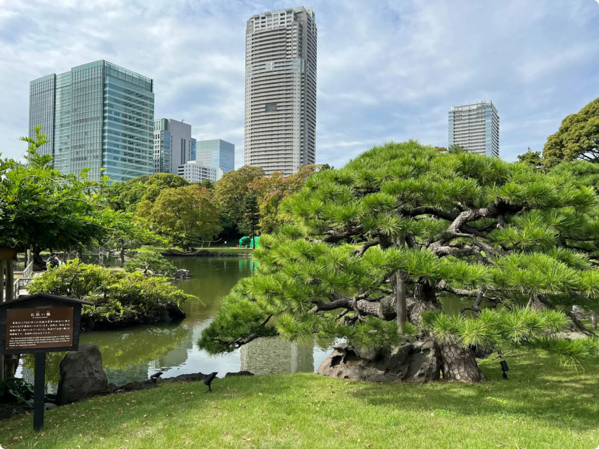
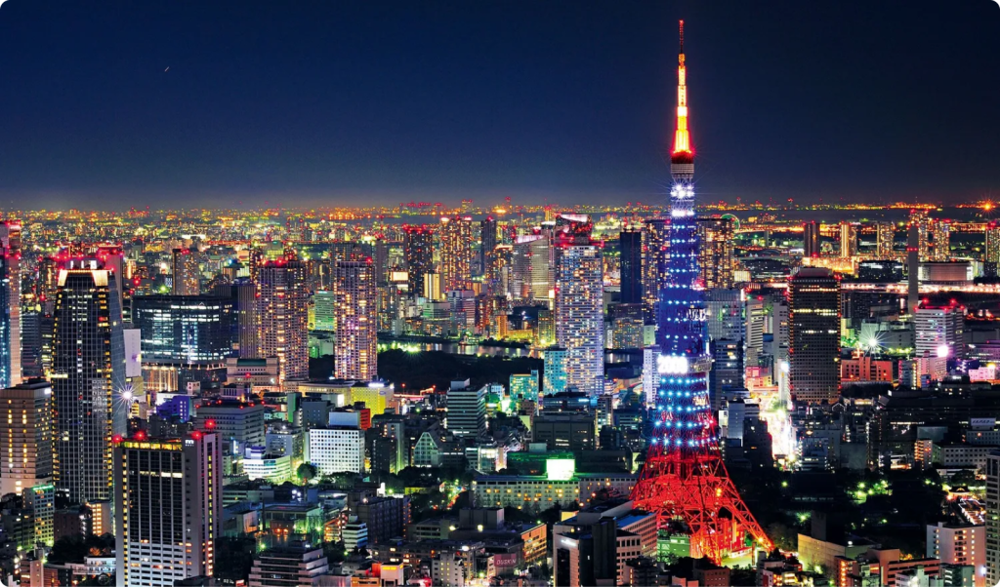
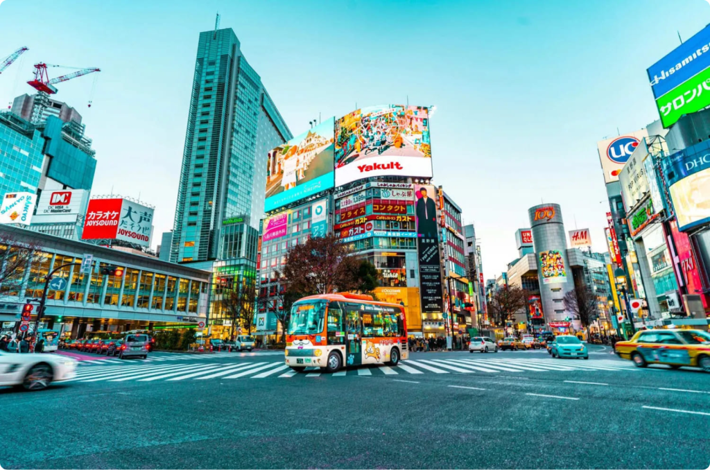
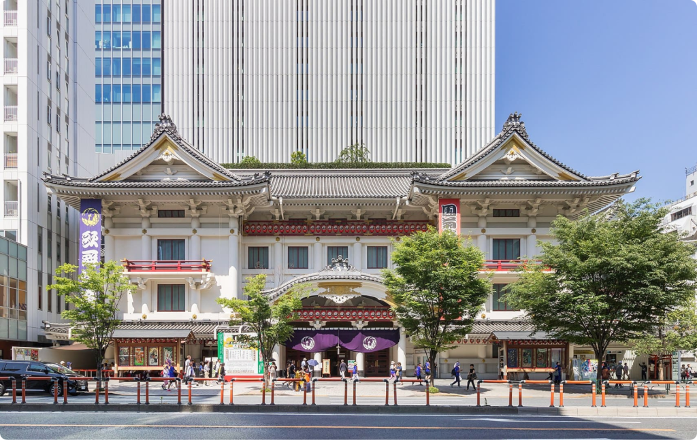

| Фотография |
Описание |
|  |
Сады Хамарикю расположены на исторической территории города, которая в 17 веке принадлежала клану сёгунов Токугава. Здесь были угодья для охоты на уток, пруды и традиционный японский сад. Позже сады стали принадлежать императорской династии. Для посетителей их открыли в конце 1946 года. |
|  |
Телевизионная башня стала популярна среди путешественников благодаря смотровым площадкам. В ясную погоду со 150-метровой высоты можно увидеть вулкан Фудзи, а ещё посмотреть на город вниз через смотровое окно в полу. Лифт поднимает посетителей на высоту 250 метров, там расположена застеклённая смотровая площадка. |
|  |
Перекрёсток 7 дорог — знаковое место японской столицы. Фасады окружающих его зданий украшены тремя огромными экранами и многочисленными рекламными щитами. Перекрёсток в районе Сибуя часто сравнивают с Таймс-сквер в Нью-Йорке. |
|  |
Здание театра расположено в фешенебельном районе Гиндза. На входе гостей ждёт импровизированная сцена. В зрительном зале всего 1964 места, которые обычно заполнены путешественниками и японцами, почитающими национальную традицию театра. Спектакли проводятся на старояпонском языке под звуки живой музыки. |